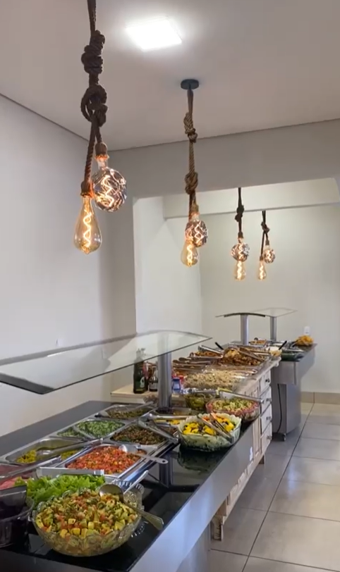
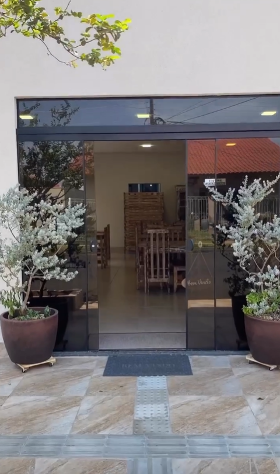

Restaurante
Restaurante
Tempero Verde
Funcionamento: Segunda á Sábado
Horário de atendimento: 10:30h ás 13:45h diariamente +50 opções e aos sábados uma deliciosa feijoada
Aceitamos todos os tipos de pagamento



